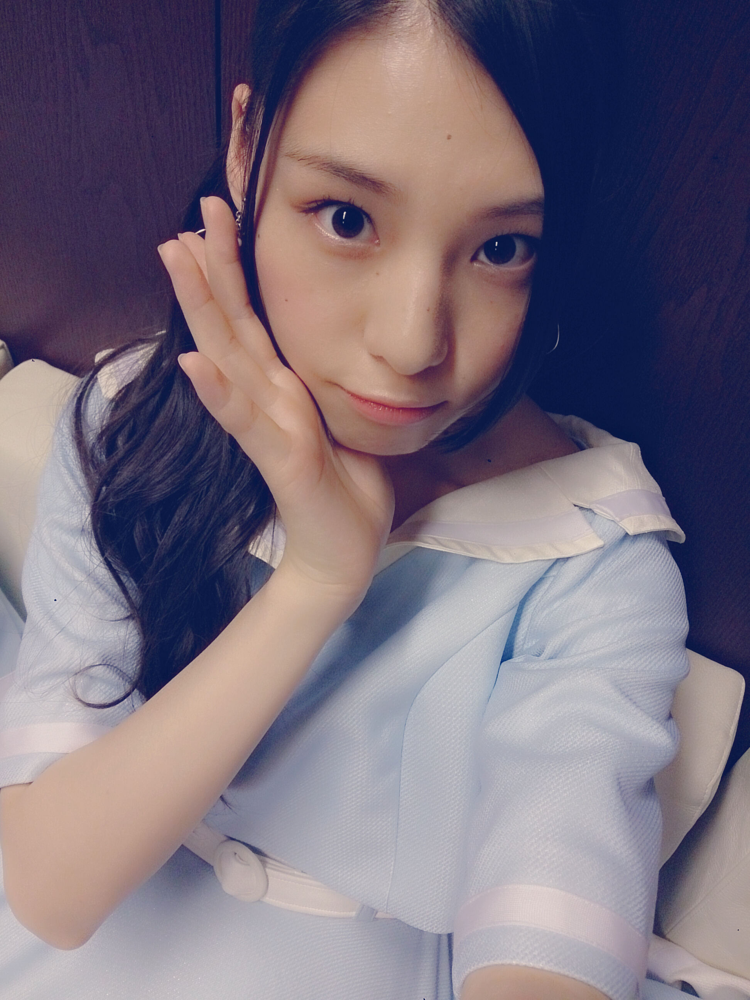
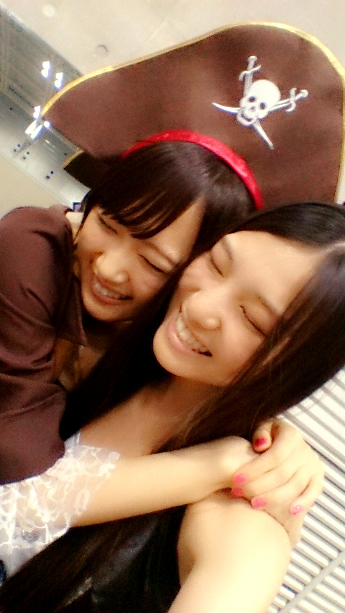
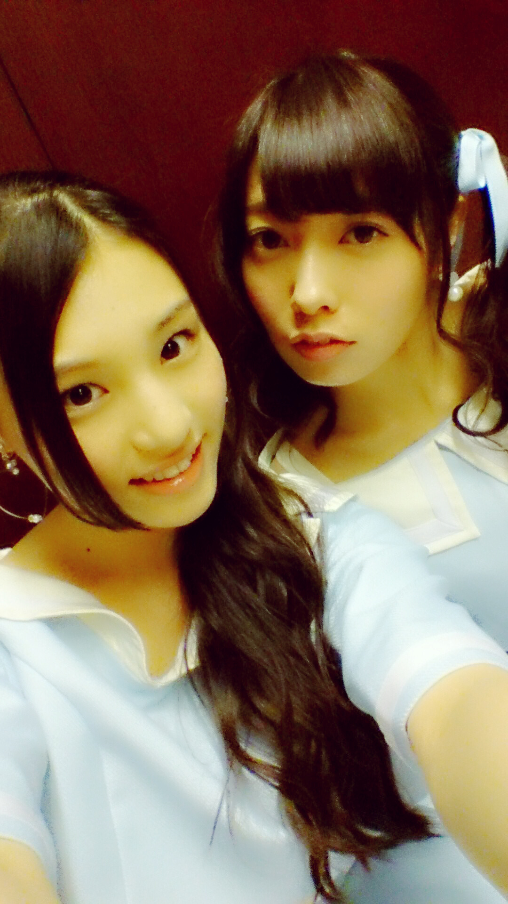
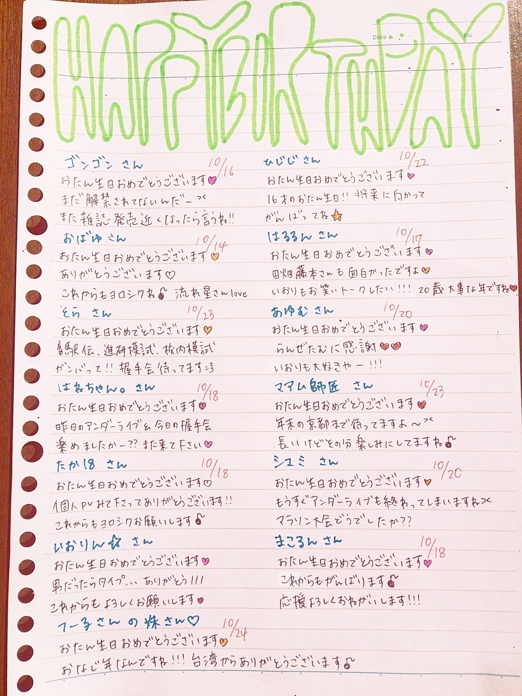
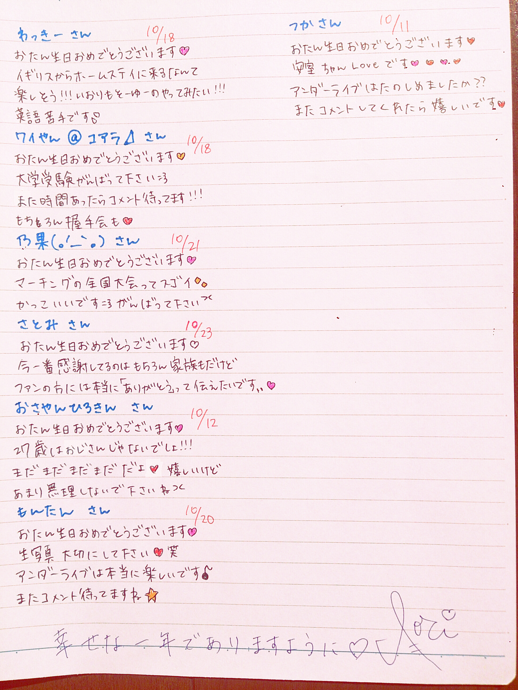
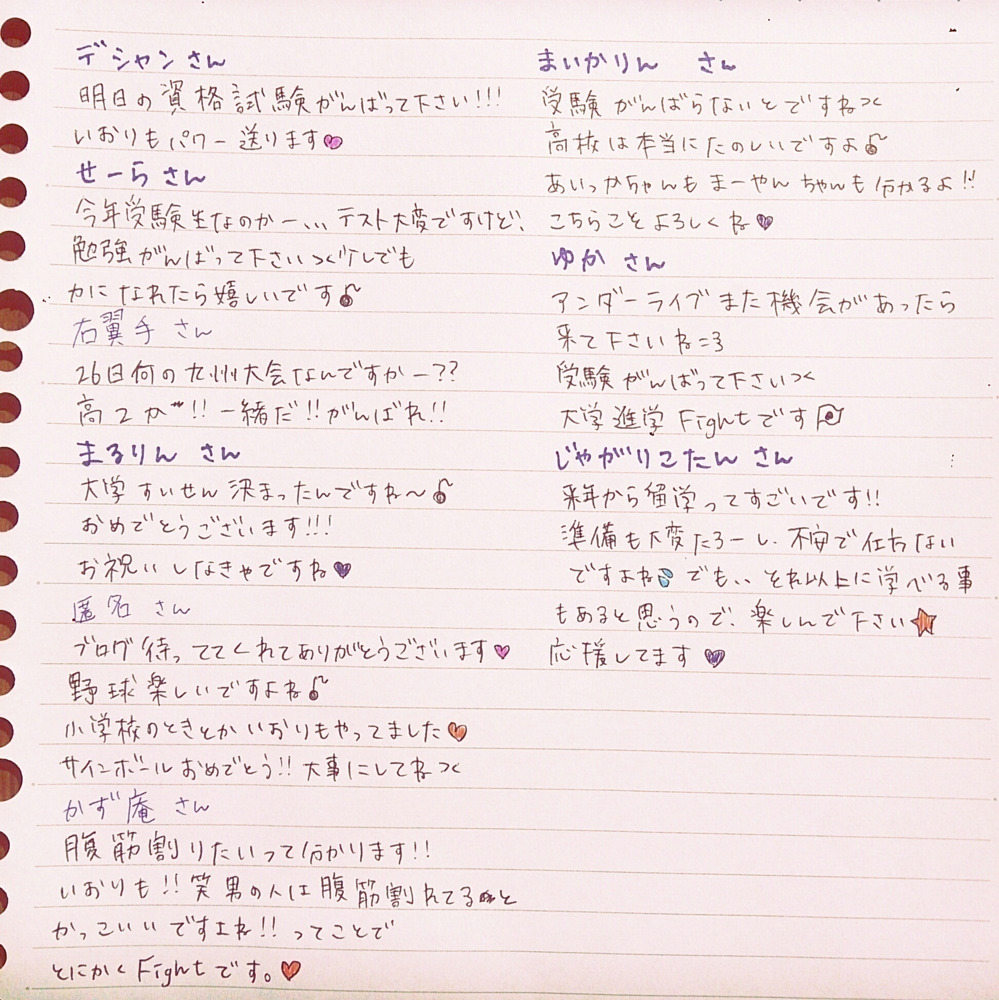
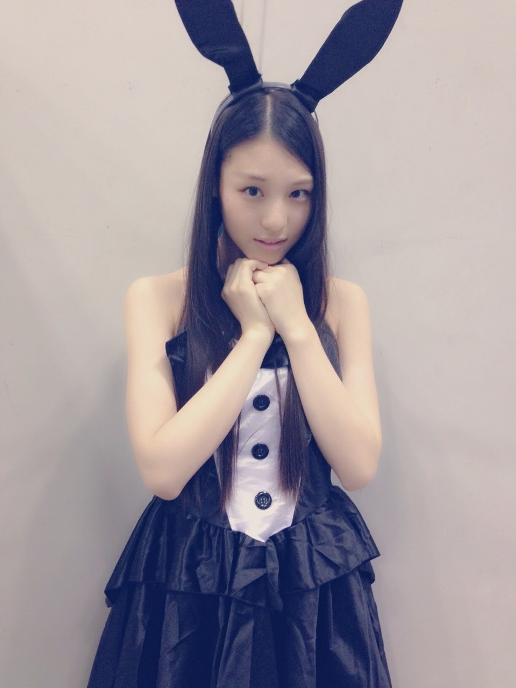

| 2014/10 18 Sat | (*いおり_(．．*)vol.9) |
みなさんこんばんわー！
高校2年16歳
さがらいおりです！

この前のアンダーライブで
初お披露目した
こじ坂46｢風の螺旋｣
の衣装だよ♡
可愛いでしょ〜♡
イヤリングも可愛くてスキ♡
こじ坂46で曲が出来て
それに相楽伊織が参加できて
ホントに嬉しいです♪♪
小嶋陽菜さん優しい♥
AKB48さんの11/26発売
38枚目シングル｢希望的リフレイン｣の
Type−Dに入ってるみたいなので
是非見てみて下さい：）
ちなみに、
いおりのお誕生日だよ〜(´,,•ω•,,)♡
アンダーライブも残り3公演です(>_<)
すごい早かった、、
それと、
アンダーライブのリハの時に
らりんさんにオススメされた
かぼちゃプリンを
この前食べたんです♡
それをらりんさんに報告したら
｢めっちゃ美味しいでしょ！！！！！｣
って言われて盛り上がったよっていう話 *˙︶˙*)ﾉ"

らりんさんと写真撮った♥
嬉しい♥
モバメどんな感じかなー、、
あんなかんじでいいのかなー(。-∀-)
この前モバメ担当の
スタッフさんに
｢モバメの方は大丈夫ですか？｣
って言われて
ん？大丈夫かな？って思ったので、、//

優里さんと写真撮った♥
嬉しい♥
ねーねー。
キングオブコント面白かったよね。
いおりはラバーガールさんが好き。
あのボソッと言うツッコミが。
でもシソンヌさんも面白かった。
あれだね。
やっぱり決勝なだけに。
あとね、
いおりね、深夜にやってるね、
オサレもんってゆーね、新番組でね、
ネタ披露して面白かった方が
来週も出れるっていう番組なんだけどね、
それを毎週録画にしててね、
アキナさんとシソンヌさんが
とってもね、面白かったのよ。
来週は誰が出るか忘れちゃったけどね、
MCがおぎやはぎさんなのよ。
あんまり興味ない方ごめんね。
コメント見てると
結構お笑い詳しそうな方多くて
つい話したくなっちゃう。
お誕生日メッセージ書きました(´,,•ω•,,)♡


次のブログ更新に近い方は
次に書きますね(´,,•ω•,,)♡
応援メッセージも書きました↓

これからも頑張りましょうね(>_<)
今日の握手会来てくれた方
ありがとうございました！
いつも遅くまでありがとうございます♪♪
券取れなかったっていう方もいて
残念だけど嬉しいな♥
次からは1,2,3部になるので
朝早いですけど来て下さいね～
今日はバニーガール着たんだけど
肝心な耳忘れてただのガールでした。

控えのとこでは
耳持ってたんだけどね、、
色んな人にそれ何の仮装？って聞かれた(>_<)
声も変だったしホントすみませんでした(>_<)
次までには声直しておくからね。
未央奈18歳の
お誕生日おめでとう♪
あんまり一緒に活動できないけど
会えたときはもっと話そうね *˙︶˙*)ﾉ"
これからもよろしくねー⭐
寧々さん卒業おめでとうございます。
あまりお話はできなかったけど、
最後のアンダーライブ一緒にやれて
良かったです。
セレモニーも感動しました(;_;)
そして、京花とりさこ
京花
京花のブログにも書いてあったけど、
いつも変顔とかツッコミとか面白くて
ホントに元気もらえたし、
いっぱい笑わせてもらえた♡
4ヶ月だけだったけど、
ほんとに楽しかった！！
お手紙もありがとう♡
りさこ
りさこはみんな言ってるけど
ホントに癒される♡
とゆーか、
どんな話でも聞いてくれる♡
だからいつも嬉しいこととかあると
里沙子に言いに行ってた♪♪
あと、お手紙ありがとうね♡
あーさみしいな、、
あーぁーさみさいよー
今日で一旦バイバイだけど
またライブ見に来て欲しいし、
遊び行ったりもしたいなー：）
2人ともお疲れ様
卒業おめでとう
大好きだよー♥
i o r i .

コメント(414)
2014/10/18 23:48